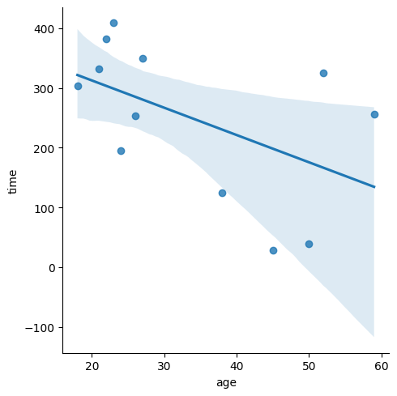
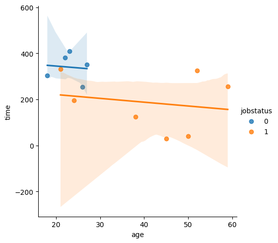
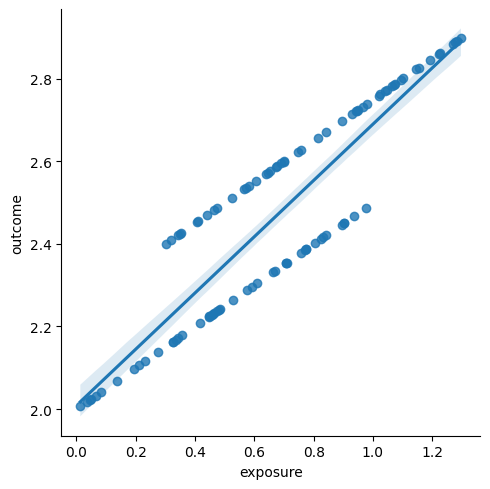
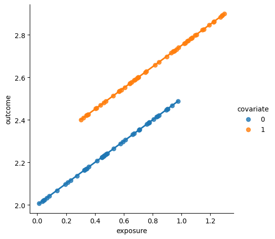
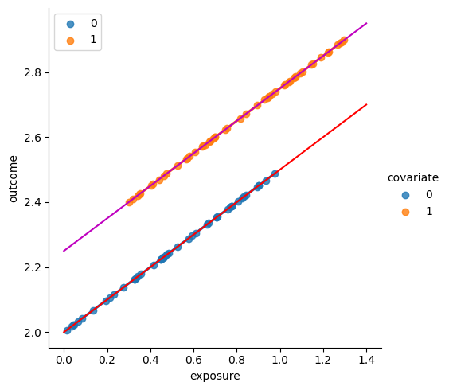
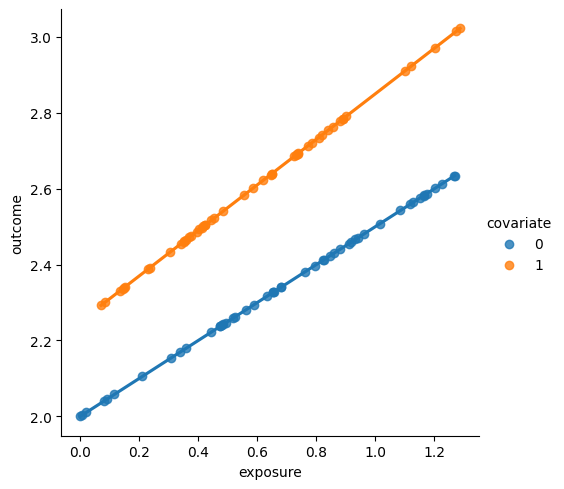

Introduction to linear models#
import pandas as pd
import seaborn as sns
players_full = pd.read_csv("../datasets/players_full.csv")
Plot of linear model for time ~ 1 + age#
sns.lmplot(x="age", y="time", data=players_full)
<seaborn.axisgrid.FacetGrid at 0x7f378deeaac0>

import statsmodels.formula.api as smf
model1 = smf.ols('time ~ 1 + age', data=players_full)
result1 = model1.fit()
result1.summary()
/opt/hostedtoolcache/Python/3.8.18/x64/lib/python3.8/site-packages/scipy/stats/_stats_py.py:1736: UserWarning: kurtosistest only valid for n>=20 ... continuing anyway, n=12
warnings.warn("kurtosistest only valid for n>=20 ... continuing "
| Dep. Variable: | time | R-squared: | 0.260 |
|---|---|---|---|
| Model: | OLS | Adj. R-squared: | 0.186 |
| Method: | Least Squares | F-statistic: | 3.516 |
| Date: | Fri, 29 Sep 2023 | Prob (F-statistic): | 0.0902 |
| Time: | 15:51:33 | Log-Likelihood: | -72.909 |
| No. Observations: | 12 | AIC: | 149.8 |
| Df Residuals: | 10 | BIC: | 150.8 |
| Df Model: | 1 | ||
| Covariance Type: | nonrobust |
| coef | std err | t | P>|t| | [0.025 | 0.975] | |
|---|---|---|---|---|---|---|
| Intercept | 403.8531 | 88.666 | 4.555 | 0.001 | 206.292 | 601.414 |
| age | -4.5658 | 2.435 | -1.875 | 0.090 | -9.991 | 0.859 |
| Omnibus: | 2.175 | Durbin-Watson: | 2.490 |
|---|---|---|---|
| Prob(Omnibus): | 0.337 | Jarque-Bera (JB): | 0.930 |
| Skew: | -0.123 | Prob(JB): | 0.628 |
| Kurtosis: | 1.659 | Cond. No. | 97.0 |
Notes:
[1] Standard Errors assume that the covariance matrix of the errors is correctly specified.
Plot of linear model for time ~ 1 + age + jobstatus#
We can “control for jobstatus” by including the variable in the linear model.
Essentially,
we’re fitting two separate models,
one for jobstatus=0 players and one for jobstatus=1 players.
sns.lmplot(x="age", y="time", hue="jobstatus", data=players_full)
<seaborn.axisgrid.FacetGrid at 0x7f378b7bed60>

import statsmodels.formula.api as smf
model2 = smf.ols('time ~ 1 + age + C(jobstatus)', data=players_full)
result2 = model2.fit()
result2.summary()
/opt/hostedtoolcache/Python/3.8.18/x64/lib/python3.8/site-packages/scipy/stats/_stats_py.py:1736: UserWarning: kurtosistest only valid for n>=20 ... continuing anyway, n=12
warnings.warn("kurtosistest only valid for n>=20 ... continuing "
| Dep. Variable: | time | R-squared: | 0.404 |
|---|---|---|---|
| Model: | OLS | Adj. R-squared: | 0.271 |
| Method: | Least Squares | F-statistic: | 3.045 |
| Date: | Fri, 29 Sep 2023 | Prob (F-statistic): | 0.0977 |
| Time: | 15:51:34 | Log-Likelihood: | -71.616 |
| No. Observations: | 12 | AIC: | 149.2 |
| Df Residuals: | 9 | BIC: | 150.7 |
| Df Model: | 2 | ||
| Covariance Type: | nonrobust |
| coef | std err | t | P>|t| | [0.025 | 0.975] | |
|---|---|---|---|---|---|---|
| Intercept | 377.8172 | 85.764 | 4.405 | 0.002 | 183.806 | 571.828 |
| C(jobstatus)[T.1] | -124.0138 | 84.307 | -1.471 | 0.175 | -314.728 | 66.701 |
| age | -1.6509 | 3.039 | -0.543 | 0.600 | -8.526 | 5.224 |
| Omnibus: | 0.983 | Durbin-Watson: | 1.910 |
|---|---|---|---|
| Prob(Omnibus): | 0.612 | Jarque-Bera (JB): | 0.661 |
| Skew: | -0.002 | Prob(JB): | 0.718 |
| Kurtosis: | 1.850 | Cond. No. | 108. |
Notes:
[1] Standard Errors assume that the covariance matrix of the errors is correctly specified.
Manual select subset with jobstatus 1#
# import statsmodels.formula.api as smf
# players_job1 = players_full[players_full["jobstatus"]==1]
# model3 = smf.ols('time ~ 1 + age', data=players_job1)
# result3 = model3.fit()
# result3.summary()
Example confoudouder 2#
via https://stats.stackexchange.com/a/17338/62481
import numpy as np
from scipy.stats import uniform, randint
covariate = randint(0,2).rvs(100)
exposure = uniform(0,1).rvs(100) + 0.3 * covariate
outcome = 2.0 + 0.5*exposure + 0.25*covariate
# covariate, exposure, outcome
df2 = pd.DataFrame({
"covariate":covariate,
"exposure":exposure,
"outcome":outcome
})
sns.lmplot(x="exposure", y="outcome", data=df2)
<seaborn.axisgrid.FacetGrid at 0x7f378b7be9a0>

import statsmodels.formula.api as smf
model2a = smf.ols('outcome ~ exposure', data=df2)
result2a = model2a.fit()
# result2a.summary()
result2a.params
Intercept 2.008633
exposure 0.681618
dtype: float64
fg = sns.lmplot(x="exposure", y="outcome", hue="covariate", data=df2)

model2b = smf.ols('outcome ~ exposure + C(covariate)', data=df2)
result2b = model2b.fit()
# result2b.summary()
result2b.params
Intercept 2.00
C(covariate)[T.1] 0.25
exposure 0.50
dtype: float64
x = np.linspace(0,1.4)
m = result2b.params["exposure"]
b0 = result2b.params["Intercept"]
b1 = b0 + result2b.params["C(covariate)[T.1]"]
b0, b1
y0 = b0 + m*x
y1 = b1 + m*x
ax = fg.figure.axes[0]
sns.lineplot(x=x, y=y0, ax=ax, color="r")
sns.lineplot(x=x, y=y1, ax=ax, color="m")
<Axes: xlabel='exposure', ylabel='outcome'>
fg.figure

model2c = smf.ols('outcome ~ -1 + exposure*C(covariate)', data=df2)
result2c = model2c.fit()
result2c.summary()
# result2c.params
| Dep. Variable: | outcome | R-squared: | 1.000 |
|---|---|---|---|
| Model: | OLS | Adj. R-squared: | 1.000 |
| Method: | Least Squares | F-statistic: | 1.449e+29 |
| Date: | Fri, 29 Sep 2023 | Prob (F-statistic): | 0.00 |
| Time: | 15:51:35 | Log-Likelihood: | 3181.6 |
| No. Observations: | 100 | AIC: | -6355. |
| Df Residuals: | 96 | BIC: | -6345. |
| Df Model: | 3 | ||
| Covariance Type: | nonrobust |
| coef | std err | t | P>|t| | [0.025 | 0.975] | |
|---|---|---|---|---|---|---|
| C(covariate)[0] | 2.0000 | 1.14e-15 | 1.76e+15 | 0.000 | 2.000 | 2.000 |
| C(covariate)[1] | 2.2500 | 1.52e-15 | 1.48e+15 | 0.000 | 2.250 | 2.250 |
| exposure | 0.5000 | 1.97e-15 | 2.54e+14 | 0.000 | 0.500 | 0.500 |
| exposure:C(covariate)[T.1] | -3.22e-15 | 2.64e-15 | -1.221 | 0.225 | -8.46e-15 | 2.02e-15 |
| Omnibus: | 892.814 | Durbin-Watson: | 1.899 |
|---|---|---|---|
| Prob(Omnibus): | 0.000 | Jarque-Bera (JB): | 15.279 |
| Skew: | -0.052 | Prob(JB): | 0.000481 |
| Kurtosis: | 1.088 | Cond. No. | 10.2 |
Notes:
[1] Standard Errors assume that the covariance matrix of the errors is correctly specified.
# import seaborn as sns
# import matplotlib.pyplot as plt
# df = sns.load_dataset('iris')
# sns.regplot(x=df["sepal_length"], y=df["sepal_width"], line_kws={"color":"r","alpha":0.7,"lw":5})
Random slopes and random intercepts#
via https://patsy.readthedocs.io/en/latest/quickstart.html
You can even write interactions between categorical and numerical variables.
Here we fit two different slope coefficients for x1; one for the a1 group, and one for the a2 group:
dmatrix("a:x1", data)
This is what matches the seaborn plot when using hue as an extra variable
model2d = smf.ols('outcome ~ 1 + C(covariate) + C(covariate):exposure', data=df2)
result2d = model2d.fit()
result2d.summary()
# result2c.params
| Dep. Variable: | outcome | R-squared: | 1.000 |
|---|---|---|---|
| Model: | OLS | Adj. R-squared: | 1.000 |
| Method: | Least Squares | F-statistic: | 4.791e+30 |
| Date: | Fri, 29 Sep 2023 | Prob (F-statistic): | 0.00 |
| Time: | 15:51:35 | Log-Likelihood: | 3356.5 |
| No. Observations: | 100 | AIC: | -6705. |
| Df Residuals: | 96 | BIC: | -6695. |
| Df Model: | 3 | ||
| Covariance Type: | nonrobust |
| coef | std err | t | P>|t| | [0.025 | 0.975] | |
|---|---|---|---|---|---|---|
| Intercept | 2.0000 | 1.98e-16 | 1.01e+16 | 0.000 | 2.000 | 2.000 |
| C(covariate)[T.1] | 0.2500 | 3.31e-16 | 7.56e+14 | 0.000 | 0.250 | 0.250 |
| C(covariate)[0]:exposure | 0.5000 | 3.43e-16 | 1.46e+15 | 0.000 | 0.500 | 0.500 |
| C(covariate)[1]:exposure | 0.5000 | 3.05e-16 | 1.64e+15 | 0.000 | 0.500 | 0.500 |
| Omnibus: | 19.354 | Durbin-Watson: | 1.865 |
|---|---|---|---|
| Prob(Omnibus): | 0.000 | Jarque-Bera (JB): | 5.297 |
| Skew: | 0.179 | Prob(JB): | 0.0707 |
| Kurtosis: | 1.931 | Cond. No. | 9.25 |
Notes:
[1] Standard Errors assume that the covariance matrix of the errors is correctly specified.
import numpy as np
from scipy.stats import uniform, randint
covariate3 = randint(0,2).rvs(100)
exposure3 = uniform(0,1).rvs(100) + 0.3 * covariate
outcome3 = 2.0 + 0.25*covariate3 + (0.5 + 0.1*covariate3)*exposure3
# \ / \ /
# different inst. different slopes
df3 = pd.DataFrame({
"covariate":covariate3,
"exposure":exposure3,
"outcome":outcome3
})
fg = sns.lmplot(x="exposure", y="outcome", hue="covariate", data=df3)

model3d = smf.ols('outcome ~ 1 + C(covariate) + C(covariate):exposure', data=df2)
result3d = model3d.fit()
result3d.summary()
# result2c.params
| Dep. Variable: | outcome | R-squared: | 1.000 |
|---|---|---|---|
| Model: | OLS | Adj. R-squared: | 1.000 |
| Method: | Least Squares | F-statistic: | 4.791e+30 |
| Date: | Fri, 29 Sep 2023 | Prob (F-statistic): | 0.00 |
| Time: | 15:51:36 | Log-Likelihood: | 3356.5 |
| No. Observations: | 100 | AIC: | -6705. |
| Df Residuals: | 96 | BIC: | -6695. |
| Df Model: | 3 | ||
| Covariance Type: | nonrobust |
| coef | std err | t | P>|t| | [0.025 | 0.975] | |
|---|---|---|---|---|---|---|
| Intercept | 2.0000 | 1.98e-16 | 1.01e+16 | 0.000 | 2.000 | 2.000 |
| C(covariate)[T.1] | 0.2500 | 3.31e-16 | 7.56e+14 | 0.000 | 0.250 | 0.250 |
| C(covariate)[0]:exposure | 0.5000 | 3.43e-16 | 1.46e+15 | 0.000 | 0.500 | 0.500 |
| C(covariate)[1]:exposure | 0.5000 | 3.05e-16 | 1.64e+15 | 0.000 | 0.500 | 0.500 |
| Omnibus: | 19.354 | Durbin-Watson: | 1.865 |
|---|---|---|---|
| Prob(Omnibus): | 0.000 | Jarque-Bera (JB): | 5.297 |
| Skew: | 0.179 | Prob(JB): | 0.0707 |
| Kurtosis: | 1.931 | Cond. No. | 9.25 |
Notes:
[1] Standard Errors assume that the covariance matrix of the errors is correctly specified.